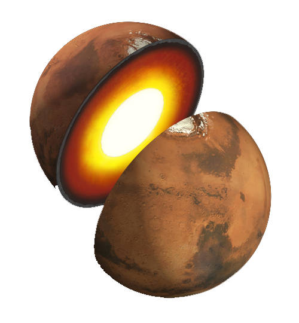
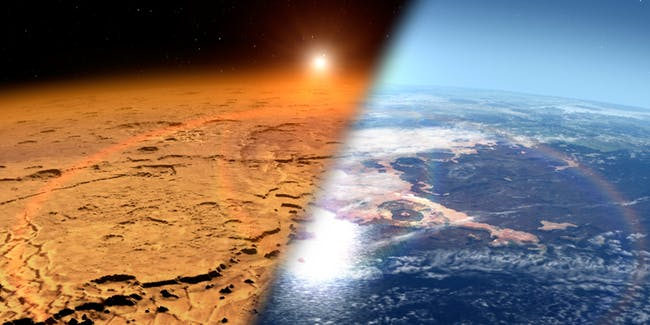
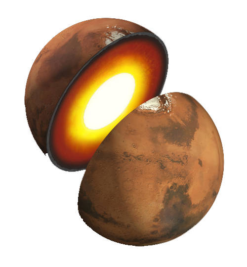
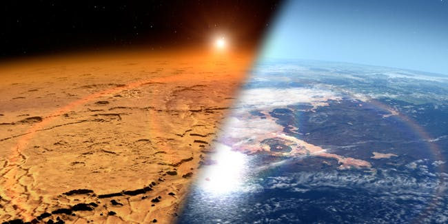

Девушка-подросток, мечтающая о космосе, может оказаться в числе немногих избранных, которые сядут на борт миссии НАСА на Марс в 2033 году. 17-летняя девушка из Хаммонда, штат Луизиана, одержима космосом.
Ее желание покинуть Землю возникло после просмотра мультфильма «Бэкъярдиганс» в детстве.

 


